Photos: Best of 2005-2012
"Photography is a way of feeling, of touching, of loving. What you have caught on film is captured forever... it remembers little things, long after you have forgotten everything." -- Aaron Siskind
Jellyfish :: Monterey Bay Aquarium, Monterey, California, USA :: Canon PowerShot A80, f/4, 1/8s :: May 2005
Angled Sidewalks :: San Francisco, California, USA :: Canon PowerShot A80, f/2.8, 1/60s :: Jan 2006
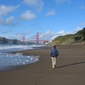
Footprints :: San Francisco, California, USA :: Canon PowerShot A80, f/5, 1/500s :: Mar 2006
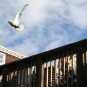
Flight :: San Francisco, California, USA :: Canon Rebel XT, f/14, 1/400s :: Mar 2006
Soar :: San Francisco, California, USA :: Canon Rebel XT, f/14, 1/250s :: Mar 2006
Tennessee Beach Sunset :: Marin, California, USA :: Canon PowerShot A80, f/2.8, 1/80s :: Nov 2006
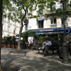
Lunch on La Terrasse :: Paris, France :: Canon PowerShot SD800IS, f/2.8, 1/500s :: Apr 2007
Cat in Montmartre :: Paris, France :: Canon PowerShot SD800IS, f/3.5, 1/400s :: Apr 2007
Arc de Triomphe :: Paris, France :: Canon PowerShot SD800IS, f/2.8, 1/500s :: Apr 2007
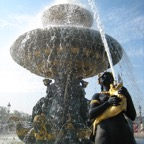
Fountain at Place de la Concorde :: Paris, France :: Canon PowerShot SD800IS, f/7.1, 1/200s :: Apr 2007
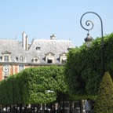
Place des Vosges :: Paris, France :: Canon PowerShot SD800IS, f/5.8, 1/200s :: Apr 2007
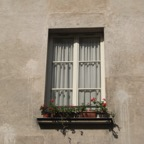
Windowsills :: Paris, France :: Canon PowerShot SD800IS, f/5, 1/800s :: Apr 2007
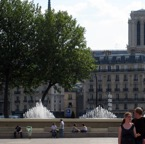
Singles and Couples :: Paris, France :: Canon PowerShot SD800IS, f/5.8, 1/400s :: Apr 2007
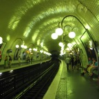
Cité Metro Station :: Paris, France :: Canon PowerShot SD800IS, f/2.8, 1/13s :: Apr 2007
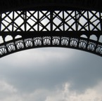
Tour Eiffel Structure :: Paris, France :: Canon PowerShot SD800IS, f/2.8, 1/500s :: Apr 2007
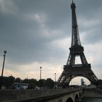
Tour Eiffel :: Paris, France :: Canon PowerShot SD800IS, f/2.8, 1/400s :: Apr 2007
Moulin Rouge :: Paris, France :: Canon PowerShot SD800IS, f/2.8, 1/30s :: Apr 2007
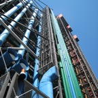
Pipes at the Centre Pompidou :: Paris, France :: Canon PowerShot SD800IS, f/7.1, 1/160s :: May 2007
Psyche Revived by Cupid's Kiss :: Paris, France :: Canon PowerShot SD800IS, f/2.8, 1/60s :: May 2007
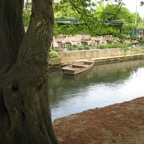
Normandy Canal :: Bayeux, France :: Canon PowerShot SD800IS, f/2.8, 1/100s :: May 2007
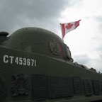
Canadian Memorial Tank, Juno Beach :: Bayeux, France :: Canon PowerShot SD800IS, f/7.1, 1/400s :: May 2007
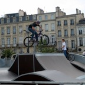
BMX Bike Competition :: Bordeaux, France :: Canon PowerShot SD800IS, f/4.5, 1/500s :: May 2007
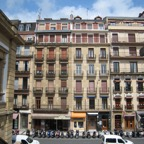
Everything in its place :: San Sebastián, Spain :: Canon PowerShot SD800IS, f/7.1, 1/320s :: May 2007
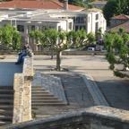
Steps :: Montpellier, France :: Canon PowerShot SD800IS, f/5.6, 1/200s :: May 2007
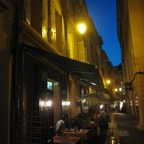
Van Gogh's Café :: Aix-en-Provence, France :: Canon PowerShot SD800IS, f/2.8, 1/8s :: May 2007
Fame and Fortune :: Monte Carlo, Monaco :: Canon PowerShot SD800IS, f/5.8, 1/200s :: May 2007
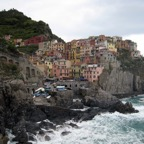
Manarola :: Cinque Terre, Italy :: Canon PowerShot SD800IS, f/7.1, 1/200s :: May 2007
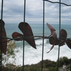
Love :: Cinque Terre, Italy :: Canon PowerShot SD800IS, f/7.1, 1/320s :: May 2007
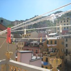
Laundry Lines :: Riomaggiore, Cinque Terre, Italy :: Canon PowerShot SD800IS, f/7.1, 1/160s :: May 2007
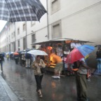
Rainy day, in line to see Michelangelo's David :: Florence, Italy :: Canon PowerShot SD800IS, f/2.8, 1/10s :: Jun 2007
Piazza della Signoria :: Florence, Italy :: Canon PowerShot SD800IS, f/7.1, 1/400s :: Jun 2007
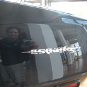
Self-Portrait :: Lamborghini Factory, Sant'Agata Bolognese, Italy :: Canon PowerShot SD800IS, f/2.8, 1/60s :: Jun 2007
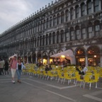
Cafe :: Venice, Italy :: Canon PowerShot SD800IS, f/2.8, 1/60s :: Jun 2007
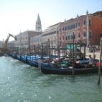
Gondolas :: Venice, Italy :: Canon PowerShot SD800IS, f/7.1, 1/200s :: Jun 2007
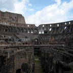
Colosseum :: Rome, Italy :: Canon PowerShot SD800IS, f/7.1, 1/250s :: Jun 2007
Saint Peter's Square :: Vatican City, The Vatican :: Canon PowerShot SD800IS, f/7.1, 1/320s :: Jun 2007
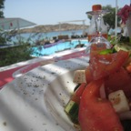
Lunch on the Mediterranean :: Mykonos, Greece :: Canon PowerShot SD800IS, f/7.1, 1/250s :: Jun 2007
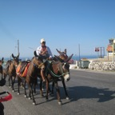
Donkey Ridin' :: Santorini, Greece :: Canon PowerShot SD800IS, f/7.1, 1/250s :: Jun 2007
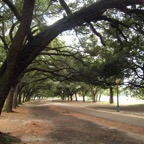
Hermann Park :: Houston, TX, USA :: Canon PowerShot SD800IS, f/2.8, 1/250s :: Dec 2007
Giraffe at Pilanesberg Game Reserve :: North West Province, South Africa :: Canon PowerShot SD800IS, f/5.8, 1/200s :: Jul 2008
Beaded wire sculpture artists :: Suburb of Johannesburg, South Africa :: Canon PowerShot SD800IS, f/2.8, 1/640s :: Jul 2008
Downtown :: Johannesburg, South Africa :: Canon PowerShot SD800IS, f/2.8, 1/200s :: Jul 2008
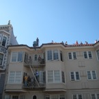
Party on the rooftops :: San Francisco, CA, USA :: Canon PowerShot SD800IS, f/2.8, 1/800s :: Oct 2008
Bay Bridge Seagull :: San Francisco, CA, USA :: Canon 5D, f/4.5, 1/1600s :: Apr 2009
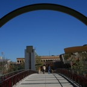
Yerba Buena Arch :: San Francisco, CA, USA :: Canon 5D, f/13, 1/1250s :: Apr 2009
Sunflowers :: San Francisco, CA, USA :: Canon 5D, f/1.8, 1/1250s :: Apr 2009
Matt :: San Francisco, CA, USA :: Canon 5D, f/3.2, 1/1250s :: Apr 2009
Sarah :: San Francisco, CA, USA :: Canon 5D, f/1.8, 1/60s :: May 2009
Sarah :: San Francisco, CA, USA :: Canon 5D, f/2.8, 1/25s :: May 2009
Matt :: San Francisco, CA, USA :: Canon 5D, f/1.8, 1/250s :: May 2009
America :: San Francisco, CA, USA :: Canon 5D, f/1.8, 1/80s :: May 2009
Wondering :: San Francisco, CA, USA :: Canon Rebel T1i, f/5.6, 1/50s :: May 2009
Traveling :: Denver, CO, USA :: Canon Rebel T1i, f/3.5, 1/80s :: May 2009
Unicyclist :: Denver, CO, USA :: Canon Rebel T1i, f/11, 1/160s :: May 2009
Condos :: Denver, CO, USA :: Canon Rebel T1i, f/11, 1/320s :: May 2009
Biking along the river :: Denver, CO, USA :: Canon Rebel T1i, f/5.6, 1/80s :: May 2009
Brett :: San Francisco, CA, USA :: Canon Rebel T1i, f/2.8, 1/1000s :: Jun 2009
Leah :: San Francisco, CA, USA :: Canon Rebel T1i, f/6.3, 1/125s :: Jun 2009
Leah :: San Francisco, CA, USA :: Canon Rebel T1i, f/5.6, 1/250s :: Jun 2009
Dog and Bike :: San Francisco, CA, USA :: Canon Rebel T1i, f/5, 1/400s :: Jun 2009
Surprised Cat :: Santa Clara, CA, USA :: Canon Rebel T1i, f/5.6, 1/50s :: Jun 2009
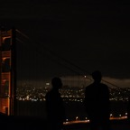
Engagement Afterparty :: San Francisco, CA, USA :: Canon Rebel T1i, f/1.8, 1/50s :: Jul 2009
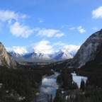
View from the Fairmont Banff Springs Hotel :: Banff, Alberta, Canada :: Canon Rebel T1i, f/10, 1/100s :: Nov 2009
Shibuya Crossing :: Tokyo, Japan :: Canon Rebel T1i, f/5.6, 1/500s :: Dec 2009
Man drawing the Yoyogi National Gymnasium :: Harajuku, Tokyo, Japan :: Canon Rebel T1i, f/13, 1/200s :: Dec 2009
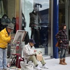
Men painting :: Harajuku, Tokyo, Japan :: Canon Rebel T1i, f/11, 1/125s :: Dec 2009
Japanese Rockabilly :: Harajuku, Tokyo, Japan :: Canon Rebel T1i, f/6.3, 1/160s :: Dec 2009
Cosplay Girls at Harajuku Station :: Tokyo, Japan :: Canon Rebel T1i, f/6.3, 1/400s :: Dec 2009
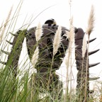
Sad Robot :: Studio Ghibli Museum, Mitaka, Japan :: Canon Rebel T1i, f/4.5, 1/80s :: Dec 2009
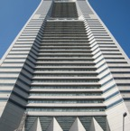
Yokohama Landmark Tower :: Minato Mirai, Yokohama, Japan :: Canon Rebel T1i, f/7.1, 1/250s :: Dec 2009
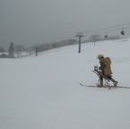
Old-time skiier :: Nozawa Onsen, Japan :: Canon Rebel T1i, f/7.1, 1/640s :: Dec 2009
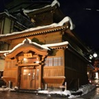
Hot Spring Onsen (Public Bath House) :: Nozawa Onsen, Japan :: Canon Rebel T1i, f/3.5, 1/30s :: Dec 2009
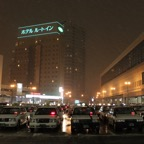
Taxi Stand :: Morioka, Japan :: Canon Rebel T1i, f/3.5, 1/20s :: Dec 2009
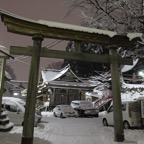
Temple :: Morioka, Japan :: Canon Rebel T1i, f/3.5, 1/10s :: Dec 2009
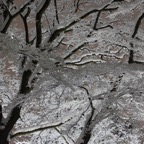
Snow-covered trees in city park :: Morioka, Japan :: Canon Rebel T1i, f/5, 1/13s :: Dec 2009
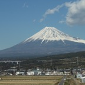
Mt. Fuji :: On Shinkansen bullet train from Tokyo, Japan :: Canon Rebel T1i, f/13, 1/160s :: Dec 2009
Baby girl with baby deer :: Miyajima, Japan :: Canon Rebel T1i, f/8, 1/320s :: Dec 2009
Torii Gates in water :: Miyajima, Japan :: Canon Rebel T1i, f/11, 1/125s :: Dec 2009
A-Bomb Dome, site of WW II Atomic Bomb attack :: Hiroshima, Japan :: Canon Rebel T1i, f/5.6, 1/80s :: Dec 2009
Tourist dressed up in Maiko/Geisha clothes :: Kyoto, Japan :: Canon Rebel T1i, f/5.6, 1/125s :: Dec 2009
Japanese Dog :: Kyoto, Japan :: Canon Rebel T1i, f/5.6, 1/30s :: Dec 2009
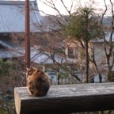
Philosopher Cat :: Along the Path of Philosophy, Kyoto, Japan :: Canon Rebel T1i, f/5.6, 1/25s :: Dec 2009
Monkey baby and mother :: Monkey Park, Arashiyama, Japan :: Canon Rebel T1i, f/5, 1/400s :: Dec 2009
Kinkakuji (Golden Pavilion) :: Kyoto, Japan :: Canon Rebel T1i, f/5.6, 1/640s :: Dec 2009
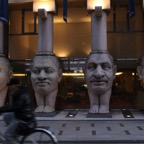
Head pillars :: Osaka, Japan :: Canon Rebel T1i, f/4, 1/60s :: Dec 2009
Dog with makeup and dress-up clothes :: Gwangju, South Korea :: Canon Rebel T1i, f/5.6, 1/15s :: Dec 2009
Cold and Tired :: Folk Village, Suwon, South Korea :: Canon Rebel T1i, f/5.6, 1/30s :: Jan 2010
Temple and Lanterns :: Hwagaesa Buddhist Temple, Seoul, South Korea :: Canon Rebel T1i, f/6.3, 1/15s :: Jan 2010
Lanterns :: Hwagaesa Buddhist Temple, Seoul, South Korea :: Canon Rebel T1i, f/6.3, 1/50s :: Jan 2010
Changdeokgung Palace :: Seoul, South Korea :: Canon Rebel T1i, f/5.6, 1/500s :: Jan 2010
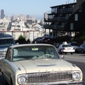
Old Ford :: San Francisco, CA, USA :: Canon Rebel T1i, f/5.6, 1/640s :: Feb 2010
1111 :: San Francisco, CA, USA :: Canon Rebel T1i, f/4.5, 1/125s :: Feb 2010
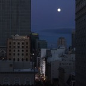
Street Parade in Moonlight :: San Francisco, CA, USA :: Canon Rebel T1i, f/8, 1/125s :: Feb 2010
Angie :: San Francisco, CA, USA :: Canon Rebel T1i, f/5, 1/60s :: Mar 2010
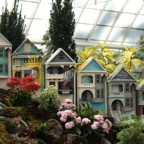
Cardboard Ladies :: San Francisco, CA, USA :: Canon Rebel T1i, f/3.2, 1/400s :: Apr 2010
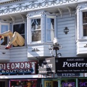
Haight & Ashbury :: San Francisco, CA, USA :: Canon Rebel T1i, f/4, 1/400s :: Apr 2010
Blue and Red :: Algonquin National Park, Ontario, Canada :: Canon Rebel T1i, f/3.5, 1/25s :: Jul 2010
Marty :: Algonquin National Park, Ontario, Canada :: Canon Rebel T1i, f/5.6, 1/100s :: Aug 2010
Rideau Canal :: Ottawa, Ontario, Canada :: Canon Rebel T1i, f/5, 1/400s :: Aug 2010
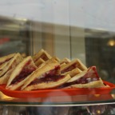
Happy Pastries :: Ottawa, Ontario, Canada :: Canon Rebel T1i, f/5, 1/250s :: Aug 2010
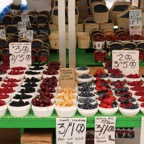
ByWard Market :: Ottawa, Ontario, Canada :: Canon Rebel T1i, f/5, 1/80s :: Aug 2010
Terry Fox and Parliament :: Ottawa, Ontario, Canada :: Canon Rebel T1i, f/11, 1/80s :: Aug 2010
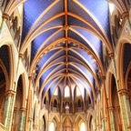
Notre-Dame Cathedral Basilica :: Ottawa, Ontario, Canada :: Canon Rebel T1i, f/4, 1/20s :: Aug 2010
Spider sculpture and Notre-Dame Cathedral Basilica :: Ottawa, Ontario, Canada :: Canon Rebel T1i, f/8, 1/640s :: Aug 2010
Rideau Hall :: Ottawa, Ontario, Canada :: Canon Rebel T1i, f/7.1, 1/60s :: Aug 2010
Merlion Park :: Singapore :: Canon Rebel T1i, f/4.5, 1/50s :: Nov 2010
Orange Cat :: Kuala Lumpur, Malaysia :: Canon PowerShot SD800IS, f/5.8, 1/200s :: Nov 2010
Display of wedding arrangements :: Kuala Lumpur, Malaysia :: Canon Rebel T1i, f/5, 1/40s :: Nov 2010
Spirals :: Singapore :: Canon Rebel T1i, f/7.1, 1/1000s :: Dec 2010
Apartment laundry :: Singapore :: Canon Rebel T1i, f/7.1, 1/320s :: Dec 2010
663 :: Singapore :: Canon Rebel T1i, f/7.1, 1/1600s :: Dec 2010
Little India :: Singapore :: Canon Rebel T1i, f/9, 1/200s :: Dec 2010
Marina Bay Sands :: Singapore :: Canon Rebel T1i, f/8, 1/250s :: Dec 2010
Marina Bay Sands Infinity Pool :: Singapore :: Canon Rebel T1i, f/16, 1/200s :: Dec 2010
Jealous :: Marina Bay Sands, Singapore :: Canon Rebel T1i, f/7.1, 1/100s :: Dec 2010
Golden Gate :: San Francisco, California, USA :: Canon Rebel T1i, f/7.1, 1/400s :: Apr 2011
Hallgrímskirkja (close) :: Reykjavik, Iceland :: Canon Rebel T1i, f/7.1, 1/800s :: May 2011
Green in the Grey :: Reykjavik, Iceland :: Canon Rebel T1i, f/6.3, 1/250s :: May 2011
Marker :: Reynisfjara Beach, near Vik, Iceland :: Canon Rebel T1i, f/4.5, 1/800s :: May 2011
Rock Cities :: Reynisfjara Beach, near Vik, Iceland :: Canon Rebel T1i, f/7.1, 1/640s :: May 2011
Hallgrímskirkja (magic hour) :: Reykjavik, Iceland :: iPhone 4, f/2.8, 1/395s :: May 2011
Blue dusk :: Keflavik, Iceland :: iPhone 4, f/2.8, 1/15s :: May 2011
Monet painting :: Monet's Garden, Giverny, France :: Canon Rebel T1i, f/5.6, 1/200s :: May 2011
Pipes :: Paris, France :: Canon Rebel T1i, f/10, 1/100s :: May 2011
Rooftops :: Paris, France :: Canon Rebel T1i, f/13, 1/400s :: May 2011
Cat in Montmartre 2 :: Montmartre, Paris, France :: Canon Rebel T1i, f/5.6, 1/80s :: May 2011
Duomo :: Florence, Italy :: Canon Rebel T1i, f/10, 1/250s :: May 2011
Duomo and Moon :: Florence, Italy :: Canon Rebel T1i, f/10, 1/15s :: May 2011
Relaxing :: Monterosso, Cinque Terre, Italy :: Canon Rebel T1i, f/11, 1/400s :: May 2011
Gossip :: Riomaggiore, Cinque Terre, Italy :: Canon Rebel T1i, f/11, 1/320s :: May 2011
Sparkling Treasure :: San Francisco, California, USA :: Canon Rebel T1i, f/20, 15.0s :: April 2012